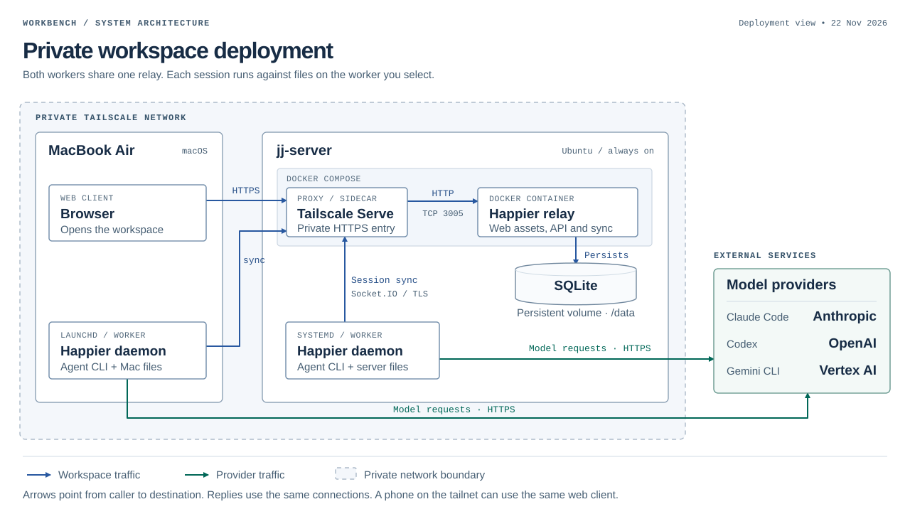

Workbench architecture
Scroll the drawing horizontally to inspect the full topology.

The browser sends the task through the relay. The server worker runs Codex in the selected Ubuntu directory and calls OpenAI. The task can continue with the Mac asleep.
From a fork commit to the private workspace
A running relay serves a built image. Pulling source on the server updates its checkout.
- Develop locally
Start from the deployment branch. Exercise the change in the Mac pilot.
- Review on GitHub
Push the topic branch to the fork. Review the diff and select the revision to promote.
- Stage the release
Build the web bundle from that revision. On Ubuntu, package it with the pinned relay image and check the candidate in isolation.
- Switch the relay
Reuse the existing data volume. Check the private URL, served revision, workspace records and both worker heartbeats.
Rollback. Switch back to the previous relay image for a web-only release. A CLI change has a separate rollout on each affected worker.
One customer question, one review item
A colleague asks in Slack whether Friday is still realistic. The supporting delivery decision lives in Linear.
- Select the thread
The user chooses a Slack thread and permits reading the linked issue.
- Prepare a reply
A server agent checks the issue and drafts an answer. A reviewer can flag a conflict with the requested date.
- Queue the decision
The work thread holds the draft, sources and open decision. A known deadline can raise it before the next review.
- Approve delivery
The user edits the reply and approves its text and destination. The connector records delivery in the same thread.
First test. Start with the read-and-draft steps. Repeated source events should update the same item while the user’s active document stays open.